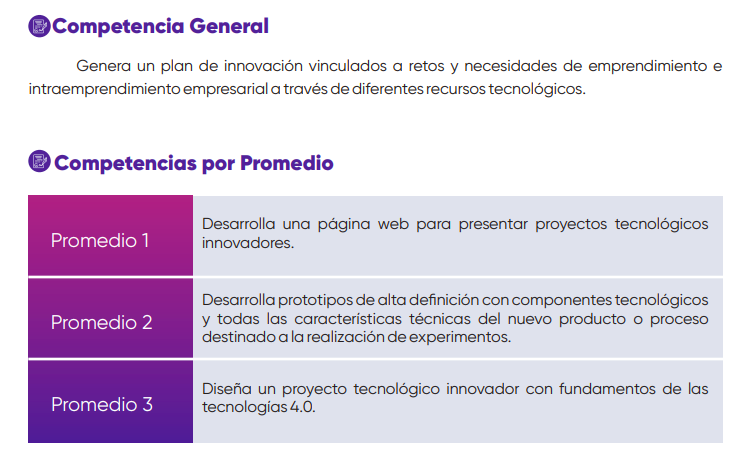

Semana 1
25 de Marzo del 2022
En esta primera clase revisamos junto al docente el silabus, comentamos las actividades que realizaremos en todo el ciclo y se nos recalco el objetivo del curso.
También se nos menciono que crearíamos nuestra propia bitácora digital para añadir el contenido del curso cada semana y esto será parte de nuestro registro académico. Hubo un tiempo en el que todos nos presentamos mencionando nuestras habilidades y de que carrera somos y esto se hizo con la finalidad de conocernos y armar nuestros grupos de trabajo el cual mantendremos durante todo el ciclo.
Terminando la parte introductoria el docente comenzó con la clase y nos menciono algunos ejemplo de proyectos innovadores que se han trabajado en otros ciclos y nos explico acerca de la impresión 3D. Finalmente nos dio el tiempo para crear nuestros grupos y cómo encargo final dejo ir pensando en una problemática para proponer un proyecto de innovación.